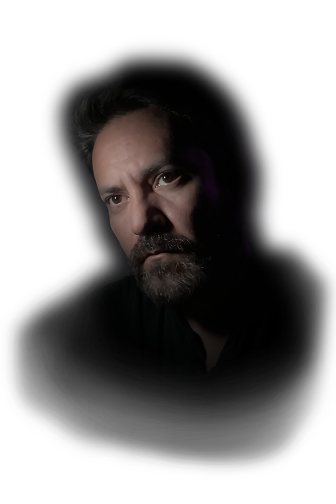

Menu
Close
Home
Portfolio
Alamedamorphosis
Alt Righter's Anthem
Dear Ted
DeathCo
D.O.G.S
God's Eye
Infinite Portrait
iSellPoop.com
MoneyShotGuns
Rekall Inc.
Shame On You Fashions
SimpleSexSite
The Preservation of a Sacred Deer
Ubort
Whitney Shoes
Bio
Contact

A portfolio of conceptual electronic and traditional artworks humorously exploring the elegant darkness of existence.
NSFW
Scroll down - Scroll down -
Artworks
See Full Portfolio
May be NSFW
See Full Portfolio
May be NSFW